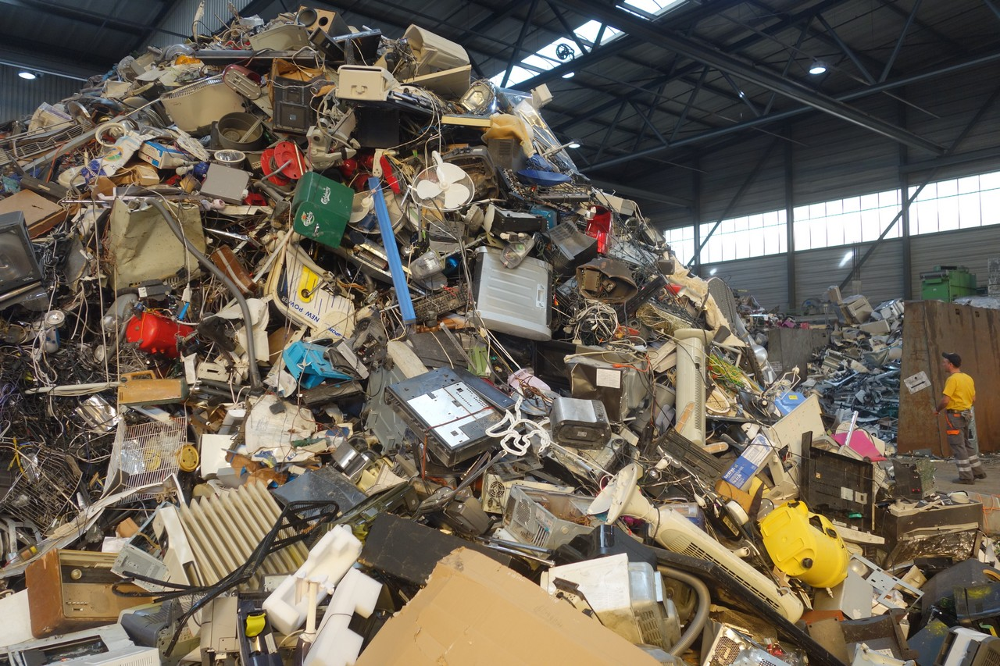
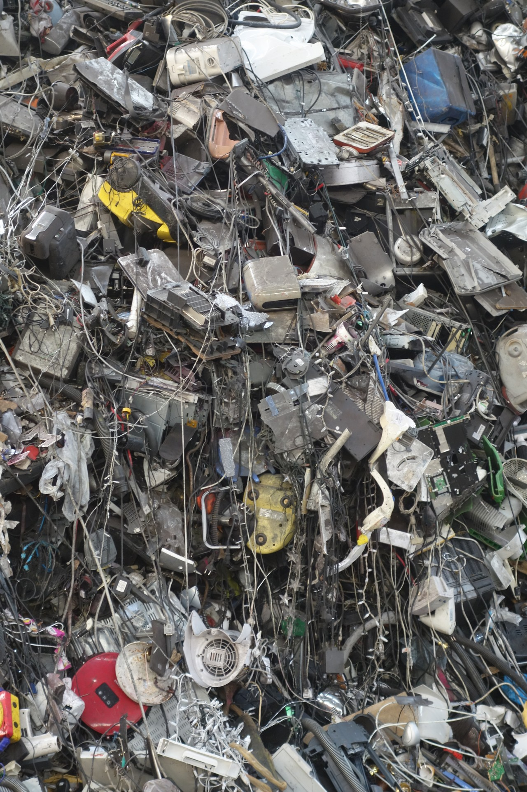
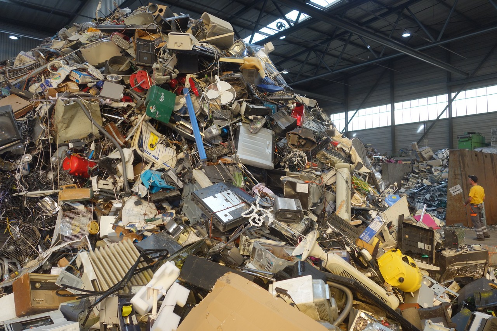
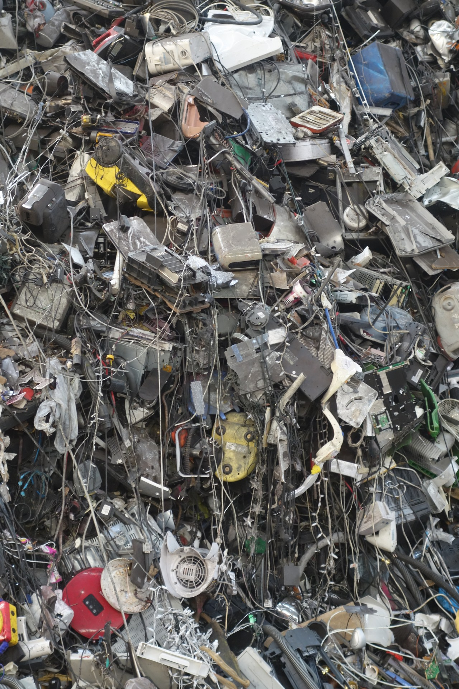
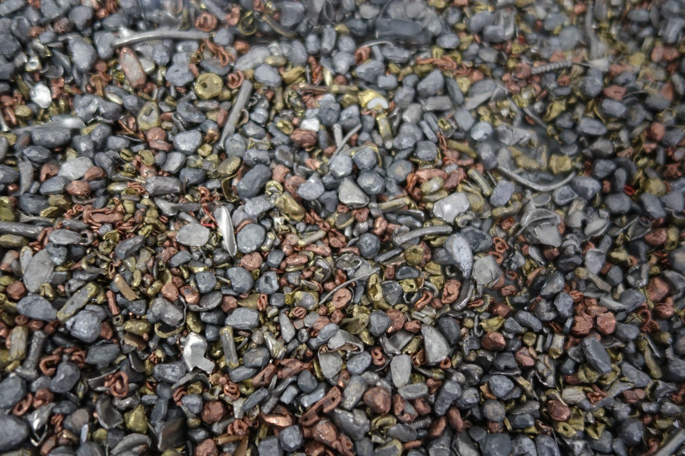
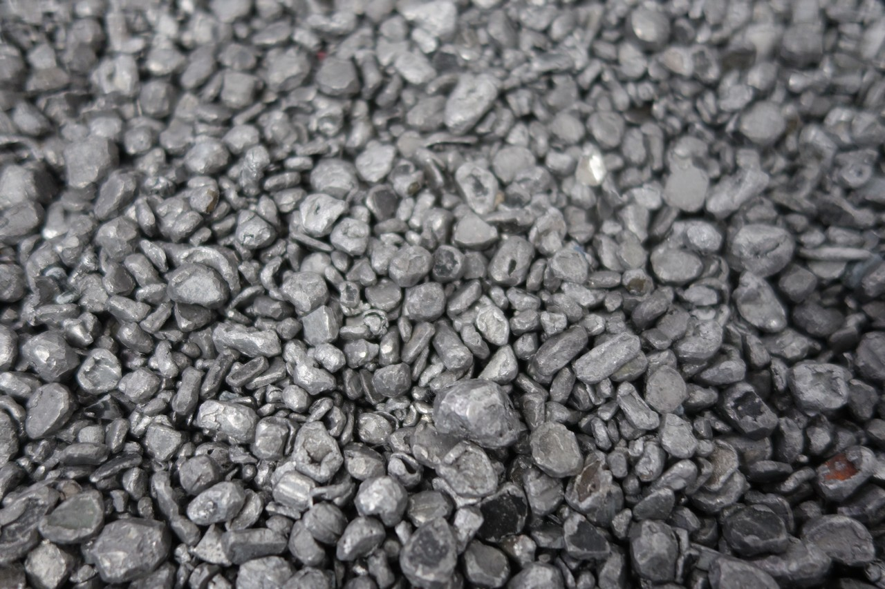
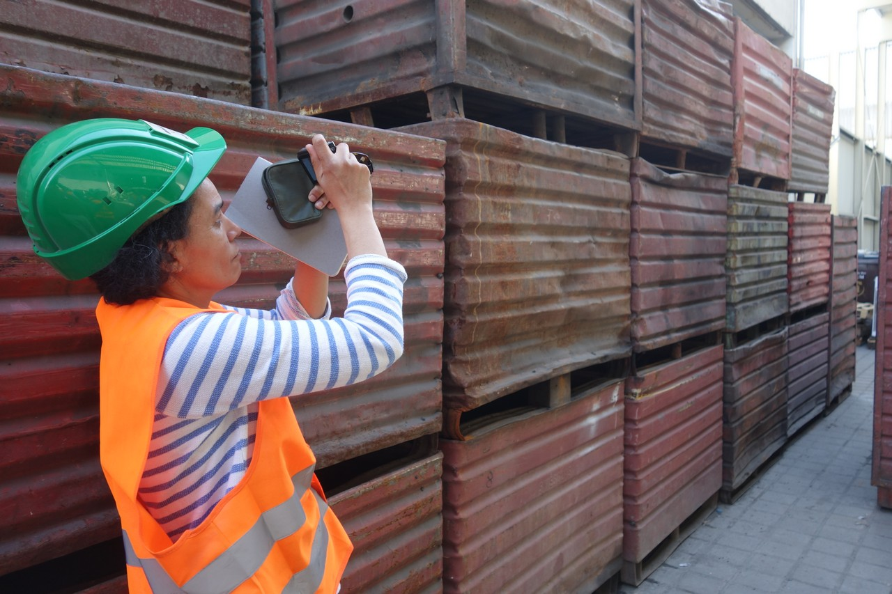
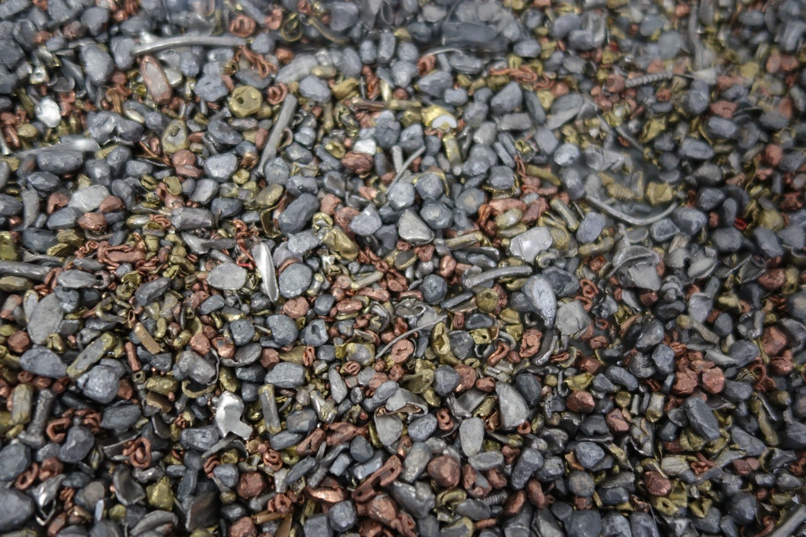
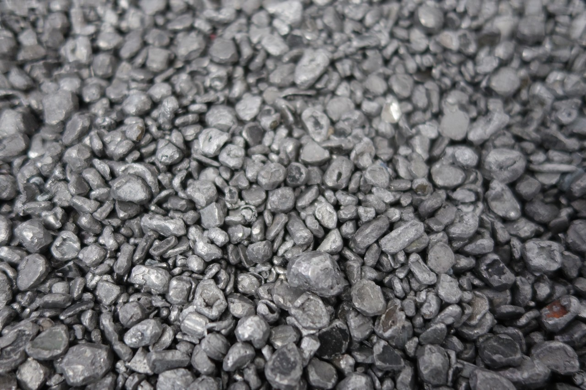
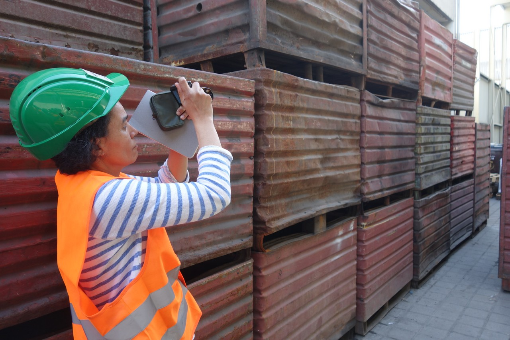

smartphone
object biography
Times of Waste

E-Waste Recycling
Coping with the huge quantities of toxic electronic waste is one of the great challenges of our time. Every year, around 22 kg of electronic waste per person is generated in Switzerland: in 2016, that was around 184,000 tonnes, and the number is increasing, also because of mobile devices. As e-waste producers, the Swiss rank eighth in the world.
Despite promising technical solutions, the majority of electronic scrap worldwide is currently not recycled. All too often, attempts are made to ‘solve’ the problem by relocating to countries with low environmental standards. But the electronic waste production effectively already starts during the raw material extraction and the production of the devices.
Since the definition ‘Green Criminology’ coined by Michael J. Lynch appeared, this discussion has gained in intensity: activists call out as criminal those who pollute the earth through production and dumping of dangerous equipment and materials, thus depriving others of their livelihoods. Such crimes must be brought to trial, and the manufacturers should also be held accountable.
Sources: Guidance Immark Regensdorf 11.5.15; Swico Technical Report 2017; Global e-Waste Monitor 2017; Nancy Frank, Michael J. Lynch. Corporate Crime, Corporate Violence. Harrow & Heston 1992.
Hoboken
In the Belgian smelter Umicore various processes concerning E-Waste Recycling are carried out: on the one hand, Umicore recycles batteries and rechargeable batteries from hybrid cars, etc., on the other hand, it smelts smartphones and other e-waste. From the smartphones, only the precious metal is taken out, the rest ends up in the slag. Rare earths are currently not recycled.
The average percentage of gold recycling is 15-50%. If modern recycling methods are used, as at Umicore, recycling can be carried out with practically no loss. One phone contains 20 - 25 mg gold, depending on model and year of manufacture; it takes 8.75 kg of ore to extract that. From 40-50 mobile phones 1g of gold can be obtained.
Sources: telephone conversation with Rolf Widmer, Empa St. Gallen (6.3.2017); Email exchange with Christian Hagelüken, Umicore Germany (29.3.2016).
Zürich
Delivery - collection - recycling: delivery points and recycling partners of SWICO
Delivery of devices
Private individuals can hand over their disused electrical appliances to specialist dealers or to around 600 Swico collection points free of charge. From there, the devices go directly to a recycling partner and are taken apart professionally. The collection points may not dispose of any devices or parts thereof.
More than 500 companies from information technology, consumer electronics, office, telecommunications, graphics industry to measurement and medical technology have now signed up to the Swico Recycling Convention.
With regard to the return and recycling of electrical and electronic equipment, there are a variety of legal requirements in place in Europe. In January 2015, WEEE Europe AG commenced operations to support manufacturers and importers.
After its foundation in 2013, together with nine leading take-back systems – including SENS and Swico Recycling – six other countries and one service partner have joined WEEE Europe AG.
Delivery points and pick up
The official Swico collection points are central to the operation of the take-back system: 58 % of the total quantity of Swico devices are returned via collection points.
Recycling partner of Swico
Swico Recycling works exclusively with qualified recycling companies for professional disassembly of the equipment. Immark in Regensdorf is one of Swico's many recycling partners.
Dismantling plants
Dismantling companies carry out upstream processing steps on behalf of a recycler. These include the manual disassembly of the delivered e-waste, and optionally a compacting of manually sorted pure fractions. The dismantling is often carried out by employees from the supplementary labour market (unemployment projects, homes for the disabled, etc.). Dismantling operations are audited every two years in accordance with Swico regulations.
Secondary Purchasers
Secondary purchasers take over downstream processing steps for the recycler, in particular the mechanical and chemical separation as well as the smelting of fractions for the recovery of metals. As a rule, these are highly specialized companies mainly located in Europe, such as the Umicore in Belgium.
Secondary purchasers have no contractual relationship with Swico. Recyclers must ensure that the second-hand purchasers comply with the Swico regulations. Such secondary purchasers are audited periodically.
Audits
Close cooperation with Empa, the research and service institution for material sciences and technology development at the ETH is designed to ensure that Swico can enforce high and uniform Swiss quality standards in all disposal services.
Sources: Telephone conversation with Jean-Marc Hensch, Managing Director Swico (6.10.2015); Swico report 2017; www.swico.ch.
Regensdorf
Immark AG in Regensdorf is a company recycling electronic waste. The processing of the materials that arrive either via Swico collection points or directly to the company is as follows:
- Acceptance and weighing of electronic waste, sorting of special materials
- Separation of cables (lead-containing etc.)
- Manual sorting by employees from the supplementary labour market (rough sort)
- Coarse shredder with blower for sorting of iron, printed circuit boards etc. (by specific weight), larger than roughly 20x20 cm
- Fine shredder with component-specific blower for plastic, aluminium, iron etc. Electronic components are sorted out separately; The workers visually decide which parts go into which container. One working shift lasts 8 ½ hours; every hour employees change station. Safety standards require annual medical check-ups, and the wearing of protective face masks, gloves and ear protection, with a maximum tolerated volume of 93dB. Plastic granules are stored in silos and transported by train. The dust briquettes obtained during the process contain metals and are sold to processing companies.
- Other fine shredders for sorting
One basic problem is that equipment which still functions may not – by law – be sorted out and therefore has to be shredded together with the other materials. Additionally in the transformations that take place, materials are first mixed in, after which the valuable substances are extracted again from the mixtures.
Immark do not specifically collect mobile phones, and not many devices come to them. When a company like verkaufen.ch delivers their broken devices, they are often already dismantled and sent together with tablets or laptops. That means mobile phones are already included in the general e-waste.
If the devices are not already disassembled, Immark removes cases, batteries and circuit boards. The federal test institute Empa verifies that this work is actually carried out.
Basically, today, there are fewer large, heavy electronic devices, but much higher quantities in the recycling process. Economically, the situation has hardly changed, but the small scale of the devices requires more effort.
Sources: Guided tour at Immark AG Regensdorf (11.5.2015); Telephone conversation with Enrico Leoni Immark AG (13.4.2016).
 




 







E-Waste Recycling company Immark AG Regensdorf, Switzerland: processing of electronic waste
Soundscape to the E-Waste Recycling company Immark AG Regensdorf, Switzerland.
Basel Convention
The Basel Convention on the Control of Transboundary Movements of Hazardous Wastes and their Disposal entered into force in 1989. It is an environmental agreement that regulates the export of hazardous waste.
According to the Basel Convention, waste such as e-waste can only be shipped from countries of the ‘Global North’ to countries of the ‘Global South’ and vice versa, if they are both signatories to the agreement. Thus, the rules of the convention apply, that means that there must be state-of- the-art recycling facilities. The shipment of waste requires the consent of the importing and exporting countries as well as all transit countries. This consent and processing happens through a notification procedure.
Put briefly, the Basel Convention bans the export of e-waste to countries of the ‘Global South’.
Switzerland signed the agreement in 1990. Around 170 states are members, including China.
The US, which according to Wikipedia exports 80% of its hazardous waste abroad, has never ratified it; thus such regulations do not apply in the US.
Source: Basel Convention on the Control of Transboundary Movements of Hazardous Wastes and their Disposal; telephone conversation with Rolf Widmer, Empa St. Gallen (6.3.2017).
Nairobi/Kampala
Nairobi / Kenya
Looking closely at smartphone recycling in Africa, not all processes and paths are tracked in detail, such where waste goes after dismantling. Though in Nairobi, for example, there is a modern dismantling plant. From there, the components in better condition go to Europe, the poorer quality to China.
Kampala / Uganda
The organization UNIDO builds facilities worldwide that recycle e-waste on site, and in the longer term also want to tackle substances such as rare earths which are problematic to recycle. In Uganda, for example, there is an e-waste centre – a ‘dismantling facility’ – where scrap can be disposed of more efficiently and in a more environmentally friendly way. E-waste projects are interesting for investors, as they promise to become very lucrative due to the growing electronics market in Africa. Because about 90% of imported electronic devices are not usable, they are e-waste from the start; often for the import, the seller performs a ‘redeclaration’, so as to circumvent the Basel Convention.
In the dismantling plant in Kampala the devices are mainly taken apart by hand – though sometimes this is done mechanically. Metals that are not dangerous are processed in on-site foundries. However, the further processing of toxic substances is not yet well-managed, as the Basel Convention prohibits the export of e-waste to countries that are not signatories of the convention and do not have state-of-the-art recycling facilities. There are currently no modern processing plants in Africa. Highly toxic substances such as cadmium etc. are exported in an unregulated fashion, especially to Nigeria, where they are processed under the worst conditions.
Sources: Telephone conversation with Heinz Leuenberger, Chief Technical Advisor UNIDO (12.8.2016) and Rolf Widmer, Empa St. Gallen (6.3.2017).
Lagos
Owode Onirin Market, Lagos / Nigeria: Electronic Waste Trade (7:54)
The computer expert Anthony Bankole, ‘Tony Schrott’, leads us through the Owode Onirin Market in Lagos: electronic waste, from motors to mobile phones, is broken down into pieces by young men and sold to Chinese dealers by people like him. "Scrap is increasingly becoming a commodity that can be used to do good business." Big businesses from the UK and China employ agents to buy the extracted metals in Lagos and export them for the most part back to China.
The material comes from the four-part documentary Chinafrika.mobile by Daniel Kötter, who worked on the same smartphone aspects as the team of Times of Waste in the context of the art and exhibition project Chinafrika.under construction: raw material extraction, production, reuse, recycling. The footage was created locally in Kolwezi, Shenzhen, Guangzhou and Lagos in collaboration with local protagonists.
Camera / Interview: Anthony Bankole, Deola Adekunle, Adeniyi Ojikutu
Production: Bukola Adebayo
Editing, camera: Daniel Kötter